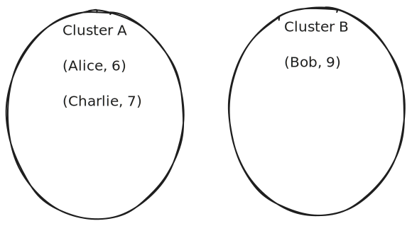
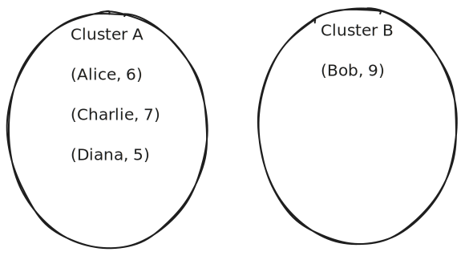
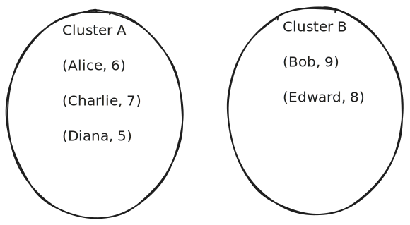
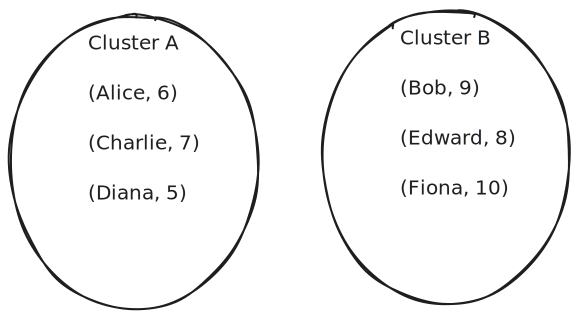
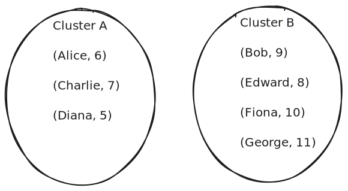
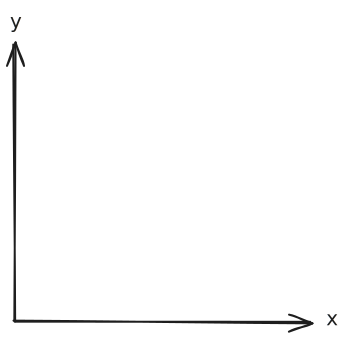
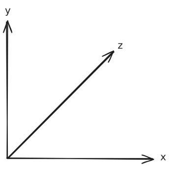

Unsupervised Learning Algorithms
|
├── 1. Clustering Techniques
│ ├── K-Means
│ ├── Silhouette Scores (Evaluation)
│ ├── Hierarchical Clustering
│ ├── Fuzzy C-Means
│ └── DBScan (Density-Based Clustering)
│
└── 2. Dimensionality Reduction Techniques
├── Low Variance Filter
├── High Correlation Filter
├── Backward Feature Elimination
├── Forward Feature Selection
├── Principal Component Analysis (PCA)
└── Projection Methods
- In Machine Learning, not all problems come with labeled data. Sometimes, we don't know the exact output — we just have a lot of raw data and want the system to find hidden patterns or structures in it. That’s where Unsupervised Learning comes in! It’s a branch of ML where the model learns directly from the input data without any guidance. Instead of predicting outputs, it focuses on exploring the data — grouping it (clustering), reducing its complexity (dimensionality reduction), or spotting unusual behavior (anomaly detection).
- In this unit, we dive into two powerful unsupervised approaches: clustering and dimensionality reduction. Let’s start with clustering, where the goal is to group similar data points together. You’ll explore the classic K-Means algorithm, evaluate clusters using Silhouette Scores, and go deeper with techniques like Hierarchical Clustering, Fuzzy C-Means for soft clustering, and DBScan, which works great for irregularly shaped clusters.
- Once clustering is covered, we move on to dimensionality reduction — a must when you’re working with huge datasets containing too many features. You’ll learn practical filtering techniques like Low Variance and High Correlation Filters to eliminate unhelpful features, as well as Forward and Backward Feature Selection to choose the most meaningful ones. Finally, you’ll explore more advanced methods like Principal Component Analysis (PCA) and Projection Methods, which reduce complexity while keeping the essence of your data intact.
Clustering Techniques
Clustering is an unsupervised learning technique used to group similar data points into meaningful clusters without any prior labels. It helps in discovering hidden patterns or natural groupings in data. For example, grouping customers by purchasing behavior, or organizing documents by topic. In clustering, the goal is to ensure that data points within the same cluster are more similar to each other than to those in other clusters. There are various clustering techniques like K-Means, Hierarchical Clustering, and DBSCAN — each with its own approach to forming these groups.
K-Means Clustering
K-Means is one of the most popular unsupervised learning algorithms used to group similar data points into clusters. It is mainly used in clustering problems where we don't have labeled data. The goal is to divide the data into K groups (clusters) based on similarity.
Key Concepts
- Centroid: The center of a cluster.
- K: Number of clusters we want to form.
- Euclidean Distance: The distance between a data point and a centroid.
How K-Means Works (Incremental Method)
- Step 1: Choose the number of clusters K.
- Step 2: Randomly initialize K centroids.
- Step 3: Go through each data point one by one:
- Assign it to the nearest centroid (based on distance).
- Immediately update the centroid of that cluster using the mean of current members.
- Step 4: Repeat this for all points. Optionally loop again if needed.
Distance Formula (1D)
When using just one feature like Shoe Size, distance between two points is the absolute difference:
\( d = |x_2 - x_1| \)
Example Dataset
Consider the following dataset of clients and their shoe sizes:
| Client | Shoe Size |
|---|---|
| Alice | 6 |
| Bob | 9 |
| Charlie | 7 |
| Diana | 5 |
| Edward | 8 |
| Fiona | 10 |
| George | 11 |
K-Means (K = 2)
- Step 1: Choose K = 2 (we want 2 clusters).
- Step 2: Randomly select initial centroids:
- Centroid A = Alice = 6
- Centroid B = Bob = 9

Step-by-Step Assignment & Updating
- Point Charlie = 7:
- Distance to A = |7 - 6| = 1
- Distance to B = |7 - 9| = 2
- → Assign to Cluster A
- Update Centroid A = Average of (6, 7) = 6.5 
- Point Diana = 5:
- Distance to A = |5 - 6.5| = 1.5
- Distance to B = |5 - 9| = 4
- → Assign to Cluster A
- Update Centroid A = Average of (6, 7, 5) = 6 
- Point Edward = 8:
- Distance to A = |8 - 6| = 2
- Distance to B = |8 - 9| = 1
- → Assign to Cluster B
- Update Centroid B = Average of (9, 8) = 8.5 
- Point Fiona = 10:
- Distance to A = |10 - 6| = 4
- Distance to B = |10 - 8.5| = 1.5
- → Assign to Cluster B
- Update Centroid B = Average of (9, 8, 10) = 9 
- Point George = 11:
- Distance to A = |11 - 6| = 5
- Distance to B = |11 - 9| = 2
- → Assign to Cluster B
- Update Centroid B = Average of (9, 8, 10, 11) = 9.5 
Final Clusters (After All Points)
- Cluster A (Centroid ≈ 6): Alice, Charlie, Diana
- Cluster B (Centroid ≈ 9.5): Bob, Edward, Fiona, George
Euclidean Distance Formula
This formula is used to measure how far two points are from each other in a 2D space (like age and amount):
\( d = \sqrt{(x_2 - x_1)^2 + (y_2 - y_1)^2} \)
Example Dataset
Let’s consider the following dataset:
| Client | Age | Amount |
|---|---|---|
| C1 | 20 | 500 |
| C2 | 40 | 1000 |
| C3 | 30 | 800 |
| C4 | 18 | 300 |
| C5 | 28 | 1200 |
| C6 | 35 | 1400 |
| C7 | 45 | 1800 |
K-Means (K = 2)
- Step 1: Choose K = 2 (we want 2 clusters).
- Step 2: Randomly select 2 initial centroids:
- Centroid A = C1 = (20, 500)
- Centroid B = C2 = (40, 1000)
Step-by-Step Assignment & Updating
- Point C3 = (30, 800):
- Distance to A = √((30 - 20)² + (800 - 500)²) = √(100 + 90000) = √90100 ≈ 300.17
- Distance to B = √((30 - 40)² + (800 - 1000)²) = √(100 + 40000) = √40100 ≈ 200.25
- → Assign to Cluster B
- Update Centroid B = Average of (40,1000) and (30,800) = (35, 900)
- Point C4 = (18, 300):
- Distance to A = √((18 - 20)² + (300 - 500)²) = √(4 + 40000) = √40004 ≈ 200.01
- Distance to B = √((18 - 35)² + (300 - 900)²) = √(289 + 360000) = √360289 ≈ 600.24
- → Assign to Cluster A
- Update Centroid A = Average of (20,500) and (18,300) = (19, 400)
- Point C5 = (28, 1200):
- Distance to A = √((28 - 19)² + (1200 - 400)²) = √(81 + 640000) = √640081 ≈ 800.05
- Distance to B = √((28 - 35)² + (1200 - 900)²) = √(49 + 90000) = √90049 ≈ 300.08
- → Assign to Cluster B
- Update Centroid B = Avg of (40,1000), (30,800), (28,1200) = (32.67, 1000)
- Point C6 = (35, 1400):
- Distance to A = √((35 - 19)² + (1400 - 400)²) = √(256 + 1000000) = √1000256 ≈ 1000.13
- Distance to B = √((35 - 32.67)² + (1400 - 1000)²) = √(5.45 + 160000) = √160005.45 ≈ 400.01
- → Assign to Cluster B
- Update Centroid B = Avg of C2, C3, C5, C6 = (40+30+28+35)/4 = 133/4 = 33.25 and (1000+800+1200+1400)/4 = 4400/4 = 1100
- → New Centroid B = (33.25, 1100)
- Point C7 = (45, 1800):
- Distance to A = √((45 - 19)² + (1800 - 400)²) = √(676 + 1960000) = √1960676 ≈ 1400.24
- Distance to B = √((45 - 33.25)² + (1800 - 1100)²) = √(138.06 + 490000) = √490138.06 ≈ 700.10
- → Assign to Cluster B
- Update Centroid B = Avg of C2, C3, C5, C6, C7 = (40+30+28+35+45)/5 = 178/5 = 35.6 and (1000+800+1200+1400+1800)/5 = 6200/5 = 1240
- → Final Centroid B = (35.6, 1240)
Final Clusters (After All Points)
- Cluster A (Centroid ≈ 19, 400): C1, C4
- Cluster B (Centroid ≈ 35.6, 1240): C2, C3, C5, C6, C7
Silhouette Score (Clustering Evaluation)
After performing clustering (like K-Means), it's important to check how good the clustering actually is. One of the most popular ways to evaluate clustering quality is using the Silhouette Score.
What is Silhouette Score?
Silhouette Score tells us how well a data point fits into its own cluster and how far it is from the other clusters. It gives a score between -1 and 1 for each point:
- +1: Perfectly assigned to its cluster.
- 0: On the boundary between two clusters.
- Negative: Possibly assigned to the wrong cluster.
Formula
For a single data point i:
Let:
a(i) = average distance from i to all other points in the same
cluster
b(i) = average distance from i to all points in the nearest
other cluster
Then:
S(i) = (b(i) - a(i)) / max(a(i), b(i))
Steps to Calculate Silhouette Score
- Step 1: Perform clustering (e.g., K-Means).
- Step 2: For each point:
- Find
a(i)= avg. distance to other points in same cluster. - Find
b(i)= avg. distance to points in the nearest other cluster. - Calculate silhouette score for that point.
- Find
- Step 3: Take the average of all
S(i)to get the overall Silhouette Score.
Simple Example
Assume we have 4 points clustered into 2 clusters:
- Cluster A: P1 = (1, 2), P2 = (2, 2)
- Cluster B: P3 = (8, 8), P4 = (9, 9)
Let’s calculate Silhouette Score for P1:
- a(P1): Distance to P2
a = √((2-1)² + (2-2)²) = √(1) = 1.0 - b(P1): Avg distance to P3 and P4
d1 = √((8-1)² + (8-2)²) = √(49 + 36) = √85 ≈ 9.22
d2 = √((9-1)² + (9-2)²) = √(64 + 49) = √113 ≈ 10.63
b = (9.22 + 10.63) / 2 ≈ 9.93 -
Silhouette Score for P1:
S = (b - a) / max(a, b) = (9.93 - 1) / 9.93 ≈ 0.899
Interpretation
Since P1’s score is close to 1, it means it's nicely separated and properly clustered. If most points have high scores, your clustering is good. If many have low or negative scores, your clusters may overlap or be wrongly assigned.
Advantages of Silhouette Score
- Easy to understand and visualize.
- Works without ground truth labels.
- Can help decide the optimal number of clusters (K).
Limitations
- Computationally expensive on large datasets.
- Assumes convex cluster shapes (works best with spherical clusters).
Note:
You can also use libraries like sklearn.metrics.silhouette_score() in Python to
calculate this automatically.
Hierarchical Clustering
Hierarchical clustering builds a hierarchy of clusters. Unlike K-Means, it does not require choosing the number of clusters (K) beforehand. There are two main approaches:
Types of Hierarchical Clustering
- Agglomerative (Bottom-Up): Start with each point as its own cluster, and keep merging the closest pairs until one cluster remains.
- Divisive (Top-Down): Start with all points in one cluster, and keep splitting it into smaller clusters.
Distance Measurement (Linkage Methods)
- Single Linkage: Distance between the closest pair of points in two clusters.
- Complete Linkage: Distance between the farthest pair of points in two clusters.
- Average Linkage: Average of all pairwise distances between points in two clusters.
Example: Agglomerative Clustering
Given 1D data points: [1, 5, 8, 10, 19, 20]
Step-by-step using single linkage:
- Start with each point as its own cluster:
[1], [5], [8], [10], [19], [20] - Find the closest pair (minimum distance):
Distance(19, 20) = 1 → Merge → [19, 20] - Next closest:
Distance(8, 10) = 2 → Merge → [8, 10] - Next closest:
Distance(5, 8) = 3 → Merge → [5, 8, 10] - Next closest:
Distance(1, 5) = 4 → Merge → [1, 5, 8, 10] - Final merge:
Distance(10, 19) = 9 → Merge all → [1, 5, 8, 10, 19, 20]

Dendrogram
A dendrogram is a tree-like diagram that shows the sequence of merges (or splits). You can “cut” the dendrogram at any level to get the desired number of clusters.
Divisive Clustering (Top-Down)
This method starts with all points in one big cluster and splits them recursively. It's less common and computationally heavier than agglomerative.
Steps:
- Start with all points in one cluster: [1, 5, 8, 10, 19, 20]
- Split into two clusters based on large distance gap → [1, 5, 8, 10] and [19, 20]
- Keep splitting each sub-cluster until each point is separate.

Advantages
- No need to pre-define K (number of clusters).
- Produces a full cluster hierarchy.
- Works well with small datasets and dendrograms help visualize structure.
Limitations
- Computationally expensive for large datasets.
- Not suitable for streaming or dynamic data.
- Once a merge/split happens, it can't be undone.
Note:
Use libraries like scipy.cluster.hierarchy in Python to create dendrograms and perform
clustering automatically.
DBSCAN Clustering Algorithm
DBSCAN (Density-Based Spatial Clustering of Applications with Noise) is a popular clustering algorithm that groups together points that are closely packed, marking points that lie alone in low-density regions as noise. It is especially useful when clusters have irregular shapes.
Key Concepts
- Epsilon (ε): The maximum radius of the neighborhood around a point. Think of it as how far you look around a person to find friends.
- MinPts: Minimum number of points required to form a dense region (cluster). Like minimum people needed in a group to call it a crowd.
- Core Point: A point that has at least MinPts neighbors within ε radius.
- Border Point: A point that has fewer than MinPts neighbors but lies within the neighborhood of a core point.
- Noise Point: A point that is neither core nor border (isolated points).
Real-Life Analogy: Mall Supervisor
Imagine you are a supervisor in a mall watching the crowd. You define your neighborhood radius (ε) as how far you look around a person to see if they are in a crowd. You decide that if a group has at least 4 people (MinPts), you call it a crowd (cluster). If someone is with enough people nearby, they are a core point. If they are near a crowd but don't have enough people themselves, they are a border point. People wandering alone far from any crowd are noise.
Example Dataset
| Point | X | Y |
|---|---|---|
| P1 | 4.5 | 8 |
| P2 | 5 | 7 |
| P3 | 6 | 6.5 |
| P4 | 7 | 5 |
| P5 | 9 | 4 |
| P6 | 7 | 3 |
| P7 | 8 | 3.5 |
| P8 | 9 | 5 |
| P9 | 4 | 4 |
| P10 | 3 | 7.5 |
| P11 | 4 | 6 |
| P12 | 3.5 | 5 |
Parameters
- Epsilon (ε): 1.9 (radius to search neighbors)
- MinPts: 4 (minimum points to form a cluster)
Euclidean Distance Formula
To find distance between two points \(P_i = (x_i, y_i)\) and \(P_j = (x_j, y_j)\):
\( d = \sqrt{(x_j - x_i)^2 + (y_j - y_i)^2} \)
Distance Table (All Pairwise Distances)
Calculated distances between points (rounded to 2 decimals):
| P1 | P2 | P3 | P4 | P5 | P6 | P7 | P8 | P9 | P10 | P11 | P12 | |
|---|---|---|---|---|---|---|---|---|---|---|---|---|
| P1 | 0.00 | 1.12 | 2.12 | 3.91 | 6.02 | 5.59 | 5.70 | 5.41 | 4.03 | 1.58 | 2.06 | 3.16 |
| P2 | 1.12 | 0.00 | 1.12 | 2.83 | 5.00 | 4.47 | 4.61 | 4.47 | 3.16 | 2.06 | 1.41 | 2.50 |
| P3 | 2.12 | 1.12 | 0.00 | 1.80 | 3.91 | 3.64 | 3.61 | 3.35 | 3.20 | 3.16 | 2.06 | 2.92 |
| P4 | 3.91 | 2.83 | 1.80 | 0.00 | 2.24 | 2.00 | 1.80 | 2.00 | 3.16 | 4.72 | 3.16 | 3.50 |
| P5 | 6.02 | 5.00 | 3.91 | 2.24 | 0.00 | 2.24 | 1.12 | 1.00 | 5.00 | 6.95 | 5.39 | 5.59 |
| P6 | 5.59 | 4.47 | 3.64 | 2.00 | 2.24 | 0.00 | 1.12 | 2.83 | 3.16 | 6.02 | 4.24 | 4.03 |
| P7 | 5.70 | 4.61 | 3.61 | 1.80 | 1.12 | 1.12 | 0.00 | 1.80 | 4.03 | 6.40 | 4.72 | 4.74 |
| P8 | 5.41 | 4.47 | 3.35 | 2.00 | 1.00 | 2.83 | 1.80 | 0.00 | 5.10 | 6.50 | 5.10 | 5.50 |
| P9 | 4.03 | 3.16 | 3.20 | 3.16 | 5.00 | 3.16 | 4.03 | 5.10 | 0.00 | 3.64 | 2.00 | 1.12 |
| P10 | 1.58 | 2.06 | 3.16 | 4.72 | 6.95 | 6.02 | 6.40 | 6.50 | 3.64 | 0.00 | 1.80 | 2.55 |
| P11 | 2.06 | 1.41 | 2.06 | 3.16 | 5.39 | 4.24 | 4.72 | 5.10 | 2.00 | 1.80 | 0.00 | 1.12 |
| P12 | 3.16 | 2.50 | 2.92 | 3.50 | 5.59 | 4.03 | 4.74 | 5.50 | 1.12 | 2.55 | 1.12 | 0.00 |
Step 1: Identify Neighbors of Each Point (Within ε = 1.9)
Check which points are within distance 1.9 for each point:
- P1: P2 (1.12), P10 (1.58) → 2 neighbors + P1 = 3 total
- P2: P1 (1.12), P3 (1.12), P11 (1.41) → 3 neighbors + P2 = 4 total
- P3: P2 (1.12), P4 (1.80) → 2 neighbors + P3 = 3 total
- P4: P3 (1.80), P7 (1.80) → 2 neighbors + P4 = 3 total
- P5: P7 (1.12), P8 (1.00) → 2 neighbors + P5 = 3 total
- P6: P7 (1.12) → 1 neighbor + P6 = 2 total
- P7: P4 (1.80), P5 (1.12), P6 (1.12), P8 (1.80) → 4 neighbors + P7 = 5 total
- P8: P5 (1.00), P7 (1.80) → 2 neighbors + P8 = 3 total
- P9: P12 (1.12) → 1 neighbor + P9 = 2 total
- P10: P1 (1.58), P11 (1.80) → 2 neighbors + P10 = 3 total
- P11: P2 (1.41), P10 (1.80), P12 (1.12) → 3 neighbors + P11 = 4 total
- P12: P9 (1.12), P11 (1.12) → 2 neighbors + P12 = 3 total
Step 2: Identify Core, Border, and Noise Points
- Core Points (≥ MinPts = 4 total points including itself):
- P2: Has 4 total points (P1, P3, P11, and itself) → Core
- P7: Has 5 total points (P4, P5, P6, P8, and itself) → Core
- P11: Has 4 total points (P2, P10, P12, and itself) → Core
- Border Points (less than 4 total points but within ε of a core point):
- P1: Connected to core point P2
- P3: Connected to core point P2
- P4: Connected to core point P7
- P5: Connected to core point P7
- P6: Connected to core point P7
- P8: Connected to core point P7
- P10: Connected to core point P11
- P12: Connected to core point P11
- Noise Points (not core and not connected to any core point):
- P9: Only connected to P12, but not within ε of any core point
Step 3: Form Clusters
Since core points P2 and P11 are connected through their mutual neighborhood (distance 1.41 < 1.9), they form one large cluster:
- Cluster 1: P1, P2, P3, P10, P11, P12 (6 points)
- Core points: P2, P11
- Border points: P1, P3, P10, P12
- Cluster 2: P4, P5, P6, P7, P8 (5 points)
- Core point: P7
- Border points: P4, P5, P6, P8

Summary
- Cluster 1: P1, P2, P3, P10, P11, P12 (6 points)
- Cluster 2: P4, P5, P6, P7, P8 (5 points)
- Noise Points: P9 (1 point)
Why DBSCAN is Useful?
- It can find clusters of arbitrary shapes.
- It automatically identifies noise points.
- It does not require specifying the number of clusters upfront.
Dimensionality Reduction Techniques
When working with datasets that have a lot of features (or columns), it becomes tricky to visualize, analyze, and build models effectively. That’s where dimensionality reduction techniques come in. In this session, we'll explore what high-dimensional data is, why it's a problem, and how we can handle it using methods like Principal Component Analysis (PCA).
Understanding the Curse of Dimensionality
The more features (also called dimensions) your dataset has, the more complex things get. This complexity leads to a challenge often referred to as the "Curse of Dimensionality", or more casually, the "Problem of Plenty".
What Does "Problem of Plenty" Mean?
It describes the difficulties that arise when datasets have too many dimensions. While more data sounds good, too many features can actually make analysis harder instead of easier.
What Are Dimensions in Data?
In data science, each feature or column in your dataset is considered a dimension. Here's how dimensions look visually:
- 1 Dimension: A straight line
- 2 Dimensions: A flat plane (like an x-y graph)
 - 3 Dimensions: A cube or 3D space
 - 4 or More Dimensions: Cannot be visualized easily — they exist only mathematically
Why Are Too Many Dimensions a Problem?
There are two main reasons:
1. Difficult Data Representation
- Visualizing data with many dimensions is nearly impossible
- Human intuition doesn’t work well beyond 3 dimensions
2. Poor Model Performance
High-dimensional data often causes a big difference between how well a model performs on the training set and how poorly it performs on new, unseen data. This is known as the training vs. testing performance gap.
- Models may "memorize" the training data
- But they fail to generalize to new data
- This issue is a direct result of the curse of dimensionality
Putting It All Together
All these issues — difficulty in visualizing, analyzing, and modeling — come together to form what we call the "Curse of Dimensionality" or "Problem of Plenty".
Dimensionality Reduction to the Rescue: PCA
To deal with high-dimensional data, one of the most popular and effective techniques is Principal Component Analysis (PCA).
What is PCA?
PCA is a method that helps us reduce the number of dimensions in our dataset while keeping as much important information as possible. It transforms the original features into a smaller set of new features called principal components.
Why Use PCA?
When working with data that has many features (like 50 or more), we often want to know:
- Which dimensions are actually useful for analysis?
- Which ones contribute the most to variation in the data?
- Which dimensions can be removed without losing important information?
How PCA Helps
- Dimension Selection: PCA identifies the features that carry the most meaningful information
- Dimension Reduction: PCA creates new features (principal components) that summarize the original data
- Information Preservation: It reduces the number of features while keeping the core structure of the data
Important Concept: It's Not Just About Deleting Features
Reducing dimensions doesn’t mean randomly removing columns. Proper dimensionality reduction involves:
- Understanding which features are most important
- Keeping or transforming those important features
- Making sure we don’t lose key patterns in the process
- Preserving the quality and meaning of the original dataset
PCA's Role Summarized
- Finds which dimensions contribute most to data variation
- Creates new dimensions (principal components) that carry essential information
- Reduces overall dimensionality while keeping the important structure intact
Low Variance Filter
The Low Variance Filter is a simple and effective dimensionality reduction technique used during data preprocessing. It removes features (columns) from the dataset that show very little variation across observations. These features don’t contribute much in distinguishing data points and can be safely removed.
Key Concept
- Variance: A measure of how much the values of a feature differ from the mean. Low variance means most values are similar.
- Low Variance Filter: If the variance of a feature is lower than a threshold (e.g. 0.01), that feature is removed.
Why Use It?
- Speeds up training by reducing number of features.
- Eliminates features that carry almost no information.
- Reduces risk of overfitting by removing irrelevant data.
How It Works
- Compute variance of each feature.
- Compare variance with a defined threshold (e.g., 0.01).
- Drop features whose variance is below the threshold.
Example Dataset
Suppose we have the following dataset:
| Feature A | Feature B | Feature C |
|---|---|---|
| 1 | 7 | 0 |
| 1 | 9 | 0 |
| 1 | 5 | 0 |
How to Calculate Variance
Variance measures how spread out the values are. Here's the formula:
\( \text{Variance} = \frac{1}{n} \sum_{i=1}^{n} (x_i - \mu)^2 \)
where \( \mu \) is the mean of the values.
Feature B Values: 7, 9, 5
- Step 1: Mean (μ) = (7 + 9 + 5) / 3 = 7.0
- Step 2: Squared Differences from Mean:
- (7 - 7)2 = 0
- (9 - 7)2 = 4
- (5 - 7)2 = 4
- Step 3: Variance = (0 + 4 + 4) / 3 = 2.67
Feature A: All values = 1 → Variance = 0
Feature C: All values = 0 → Variance = 0
Filter Step
If threshold = 0.1, drop features with variance < 0.1 → Drop Feature A and Feature C.
When to Use
- Before training any machine learning model.
- During feature selection pipeline.
- When dataset has many irrelevant or constant columns.
Limitations
- Doesn’t consider feature importance or target variable.
- Only removes features with low variance, not redundant ones with high variance.
- May miss removing uninformative features that still vary.
Note:
A good practice is to combine Low Variance Filter with other feature selection methods like Correlation Filter, Backward Elimination, or PCA for better results.
High Correlation Filter
The High Correlation Filter is a feature selection technique used to eliminate redundant features that are strongly correlated with each other. When two or more features have a high correlation, they carry similar information. Keeping all of them leads to redundancy and may cause overfitting.
Key Concept
- Correlation: A statistical measure that expresses the extent to which two features change together.
- Correlation Coefficient (r): Value between -1 and +1 indicating direction and
strength of correlation.
- +1 → Perfect positive correlation
- -1 → Perfect negative correlation
- 0 → No correlation
- Threshold: If |correlation| between two features > 0.9 (or chosen threshold), remove one of them.
Why Use It?
- Removes redundant features with similar behavior.
- Reduces multicollinearity (problem for linear models).
- Improves model generalization and performance.
How It Works
- Compute correlation matrix of all features.
- Identify feature pairs with correlation above a chosen threshold (e.g., 0.9).
- Drop one feature from each highly correlated pair.
Example
Suppose we have the following dataset:
| Feature X | Feature Y | Feature Z |
|---|---|---|
| 1 | 2 | 5 |
| 2 | 4 | 6 |
| 3 | 6 | 7 |
| 4 | 8 | 8 |
| 5 | 10 | 9 |
Correlation matrix of the features:
| X | Y | Z | |
|---|---|---|---|
| X | 1.00 | 1.00 | 0.99 |
| Y | 1.00 | 1.00 | 0.99 |
| Z | 0.99 | 0.99 | 1.00 |
As we can see, the correlation between Feature X and Feature Y is 1.00, which means they are perfectly positively correlated (Y = 2 × X). Therefore, we can drop either X or Y to remove redundancy.
When to Use
- When dataset has many numeric features.
- During preprocessing before model training.
- Especially useful in linear models (like regression) to avoid multicollinearity.
Limitations
- Only works on numeric features.
- Does not consider relationship with target variable.
- Sometimes both correlated features may still be important for prediction (use with care).
Note:
High Correlation Filter is usually used after removing constant/low variance features and before applying more complex techniques like PCA or Recursive Feature Elimination.
Backward Feature Elimination
Backward Feature Elimination is a wrapper-based feature selection technique where we start with all features and remove the least useful ones one by one. The goal is to find the smallest subset of features that still give the best model performance.
How It Works
- Start with all features in the dataset.
- Train the model and evaluate performance (e.g., using accuracy, R², etc.).
- Remove the feature that has the least impact on model performance (least significant).
- Repeat until removing more features worsens performance or desired number of features is reached.
Why Use It?
- Improves model performance by removing noise.
- Helps reduce overfitting.
- Makes the model simpler and faster to train.
- Especially useful when you have a lot of features.
Example (Simple)
Suppose we are trying to predict a student's performance using these features:
- Hours Studied
- Attendance
- Previous Grades
- Favorite Color
We train a model using all 4 features. During backward elimination, we find that “Favorite Color” does not affect prediction. So we eliminate it. Then we check again and remove the next least useful feature if performance stays the same or improves.
When to Stop?
- When removing more features significantly reduces model accuracy.
- Or when a fixed number of top features is selected (e.g. top 5).
Limitations
- Computationally expensive with many features.
- Doesn't work well with correlated features (multicollinearity).
- May remove a feature that is weak alone but strong in combination with others.
Tips
- Best used with linear models like Linear Regression or Logistic Regression.
- Combine with other techniques like Variance Filter or PCA for better results.
When to Use
- You have too many features and need to simplify the model.
- You want to keep only the most impactful variables.
- You want a more interpretable model with fewer predictors.
Principal Component Analysis (PCA):
Principal Component Analysis (PCA) might sound technical, but it’s really just a clever way of making large datasets easier to understand. When you have too many features or variables, PCA helps you simplify without losing the big picture. Think of it as a method to uncover the "essence" of your data.
Why Do We Even Need PCA?
The Overfitting Problem
Let’s say you’re training a machine learning model and you decide to feed it every possible feature. More features = more power, right? Not quite. Too many features can lead to overfitting—where the model becomes excellent at memorizing training data but terrible at generalizing to new data.
- Models trained with too many features pick up noise instead of real patterns.
- This leads to great performance on training data but poor results on unseen data.
Visualizing Overfitting
Imagine a scatter plot. A well-fitted model draws a line that follows the trend. An overfitted model, however, draws a squiggly line that tries to hit every single point, including outliers. It looks fancy but performs poorly.
- Well-fitted model: Captures trends, ignores noise.
- Overfitted model: Matches every point, including irrelevant ones.
This is where PCA becomes a game-changer.
What PCA Brings to the Table
The Idea Behind PCA
PCA suggests a smarter way: “Let’s not use all features. Instead, let’s create new ones that summarize the important parts of the data.”
- Reduces the number of features (called dimensions).
- Captures the essential patterns.
- Makes models faster, simpler, and often more accurate.
How PCA Works—The Concept
Think of your dataset as a 3D object. PCA looks at it from the best angles and creates simpler versions (like 2D shadows) that still carry most of the information. Each new "view" is called a principal component.
How PCA Actually Works (Step by Step)
Step 1: Finding the First Principal Component (PC1)
- PCA looks for the direction where the data varies the most.
- It projects all data onto a line in that direction.
- This line becomes PC1—the first and most important new feature.
Step 2: Adding the Second Component (PC2)
- PC2 is found by rotating 90° from PC1—it’s completely independent.
- It captures the second-most variation in the data.
Step 3: More Components (PC3, PC4, ...)
- PCA keeps going until it has as many components as the original features.
- Each one captures a little less variation than the one before.
- All components are orthogonal (i.e., independent) of each other.
Behind the Scenes: What PCA Really Does
- Takes messy, correlated features.
- Transforms them into neat, uncorrelated ones.
- You can now focus on just the most useful features and ignore the rest.
Key Principles of PCA
1. You Can’t Create More Than You Start With
- If you have 5 original features, you can get a maximum of 5 principal components.
- But most of the time, just a few components will carry most of the value.
Example: From 100 original features, PCA might find that 10 components explain 95% of the data. You can safely use just those 10.
2. Each Component Has Its Rank
- PC1 = most important (explains the most variation).
- PC2 = second-most important, and so on.
Pro Tip: In many real-world problems, the first two or three components often hold most of the insight.
3. Components Are Independent (Orthogonal)
- No component can be predicted from another.
- Each adds unique, non-redundant information.
This independence is what makes PCA so effective—it cuts out repetition and makes your models more efficient.
The PCA Workflow: Before, During, and After
Before PCA
- Your dataset is huge with too many features.
- Overfitting is common and performance drops on new data.
- The data is hard to visualize and interpret.
During PCA
- Analysis: Looks for patterns and variation.
- Transformation: Creates new features (principal components).
- Ranking: Orders them by how much variation they explain.
- Selection: You decide how many components to keep.
After PCA
- Cleaner data: Fewer, more meaningful features.
- Better model performance: Generalizes well.
- Faster computation: Less data = quicker results.
- Improved visualization: Easier to plot and explore.
- Noise reduction: Irrelevant features get filtered out.
Where PCA Is Used in the Real World
1. Image Compression & Recognition
- High-resolution images can have millions of features (pixels).
- PCA reduces this to a few hundred components.
- The image still looks the same to the human eye but is easier to process.
2. Customer Behavior Analysis
- Businesses collect tons of customer data.
- PCA helps uncover the key drivers of customer decisions.
- This insight helps improve marketing and product strategy.
3. Gene Expression Analysis
- Biologists study thousands of genes per patient sample.
- PCA finds which gene patterns matter most.
- It speeds up research and highlights meaningful biological clues.
Wrapping Up: Why Learn PCA?
PCA isn’t just a math trick—it’s a practical tool that solves real-world problems in data science. Whether you’re cleaning up your dataset, improving model performance, or just trying to make sense of complicated data, PCA is a great skill to have in your toolkit.
Projection Methods (Dimension Reduction)
Projection methods are powerful techniques used in machine learning and data analysis to reduce the number of features (dimensions) in a dataset while retaining the most important information. This helps in visualizing data, reducing storage/computation, and improving model performance.
In simpler terms, it's like taking a 3D object and showing it as a 2D shadow on a wall — you lose some details, but keep the overall shape.
Why Dimension Reduction?
- To remove redundant or less useful features.
- To simplify models and reduce overfitting.
- To visualize high-dimensional data (e.g., plot 10D data in 2D).
- To improve training time and model performance.
Key Concepts
- High-Dimensional Data: Data with many features (e.g., 100 columns).
- Projection: Mapping high-dimensional data to a lower-dimensional space.
- Principal Components: New features (axes) that capture the most variance in data.
- Variance: A measure of how much the data spreads out — more variance = more information.
Popular Projection Techniques
- Principal Component Analysis (PCA): Projects data onto new axes that capture maximum variance.
- Linear Discriminant Analysis (LDA): Similar to PCA, but considers class labels to maximize class separability.
- Random Projection: Uses random matrices to reduce dimensions with minimal loss of information.
How PCA Works (Step-by-Step)
- Step 1: Standardize the dataset (mean = 0, variance = 1).
- Step 2: Calculate the covariance matrix.
- Step 3: Find eigenvalues and eigenvectors of the covariance matrix.
- Step 4: Choose top-k eigenvectors (those with highest eigenvalues).
- Step 5: Project the data onto these top-k components.
Example Dataset
Let's consider this simple dataset of students based on their Math and English scores:
| Student | Math | English |
|---|---|---|
| Alice | 90 | 85 |
| Bob | 70 | 65 |
| Charlie | 60 | 60 |
| Diana | 95 | 90 |
| Edward | 80 | 70 |
| Fiona | 85 | 80 |
Visual Intuition (2D to 1D Projection)
Imagine this dataset as points on a 2D graph (Math vs English). PCA will find a new line (principal component) that best fits this spread of points.
We can then project each point onto this line and represent each student using just 1 value (coordinate on this line), instead of 2 (Math and English).
Mathematical Insight
The direction of the new axis (principal component) is chosen such that:
- It passes through the mean of the data.
- It captures the maximum variance in the data.
- It is orthogonal (perpendicular) to other components.
Covariance Matrix Formula
Covariance measures how two features vary together. For two features X and Y:
\( \text{Cov}(X, Y) = \frac{1}{n-1} \sum_{i=1}^{n} (X_i - \bar{X})(Y_i - \bar{Y}) \)
Eigenvalues & Eigenvectors
These help us understand the directions (eigenvectors) and the importance (eigenvalues) of those directions.
- Higher eigenvalue → more variance along that direction.
- Choose top eigenvectors to keep the most important directions.
Final Projection
Multiply the original data matrix with the top-k eigenvectors (components) to get the transformed lower-dimensional data.
Example Output (After PCA with 1 Component)
Each student now has a single score (Principal Component 1) that represents a combination of Math and English:
| Student | PC1 Score |
|---|---|
| Alice | 1.5 |
| Bob | -1.2 |
| Charlie | -2.0 |
| Diana | 2.0 |
| Edward | 0.3 |
| Fiona | 1.0 |
Benefits of PCA
- Reduces noise in the dataset.
- Helps in visualization and pattern discovery.
- Makes machine learning models faster and more efficient.
Limitations
- PCA is a linear technique — it might not capture complex (non-linear) patterns.
- It may make interpretation of features difficult after transformation.
Real-Life Analogy
Imagine you have a high-resolution photo (lots of pixels = high dimension). You want to print a small version for your wallet — you shrink it (dimension reduction) while keeping the main idea (faces, colors) intact.